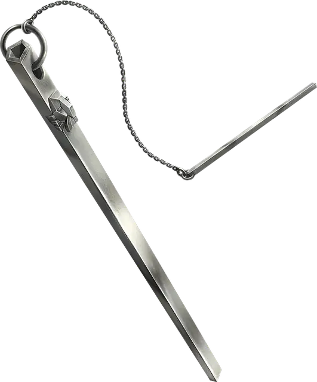

Колокольчик открывания
Chime of Opening
Чудесный предмет, редкий

Рекомендованная стоимость 251-2 500 зм
Это полая металлическая трубка длинной 1 фут весит 1 фунт. Вы можете действием ударить по ней и направить на предмет, находящийся в пределах 120 футов от вас, который можно открыть, например, дверь, люк или замок. Трубка издаёт чистый звук, и один замок или засов на предмете отпирается, за исключением тех случаев, когда звук не может достигнуть цели. Если на предмете не остаётся запирающих элементов, то предмет открывается сам по себе.
Этот предмет может быть использован десять раз. После десятого использования он трескается и становится непригодным для использования.